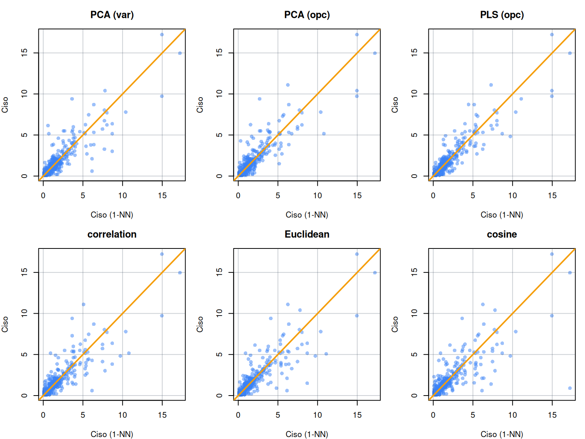

Dissimilarity method: correlation
window size (ws) : full (no moving window)
center : TRUE
scale : FALSE Estimating dissimilarity between spectra
2026-04-20
Source:vignettes/estimating-dissimilarity-between-spectra.qmd
Similarity has two faces: causal and derivative – (Tversky, 1977)

1 Introduction
Dissimilarity measures quantify how different observations are from one another. In spectroscopy, dissimilarity matrices are commonly used for exploratory analysis, outlier detection, nearest-neighbor search, sample selection, and local calibration or local learning methods. In the resemble package, dissimilarity() is the main interface for computing dissimilarity matrices.
In resemble, the term dissimilarity is preferred over distance to emphasize that the implemented measures are not necessarily proper metric distances. For reference, a metric distance is typically expected to satisfy three properties: minimality (or identity), meaning that the distance between an observation and itself is zero and no greater than the distance between distinct observations; symmetry, meaning that the distance from to is the same as the distance from to ; and the triangle inequality, meaning that the distance between two observations cannot exceed the sum of their distances through a third observation. Some of the measures implemented in resemble do not satisfy all of these properties. For example, correlation dissimilarity does not satisfy the triangle inequality, and cosine dissimilarity can be zero for non-identical observations.
The dissimilarity() function includes an argument called diss_method, which specifies how dissimilarity is computed. This argument takes a dissimilarity constructor object that defines the corresponding method and its parameters. The package provides a variety of such constructors.
The advantages of using dissimilarity() function over standard methods in R are twofold: i) it allows the computation of dissimilarities between observations in two different sets (e.g., training and test sets) without needing to combine them into a single dataset; and ii) it consolidates various dissimilarity measures under a common interface, making it easier to switch between methods and compare results.
1.1 Main notation
Here, the following notation is used:
is the training set of spectra (or predictors), with dimensions (observations variables).
is the training set of response variables, with dimensions (observations response variables). Typically, includes only one response variable only.
is the test set of spectra, with dimensions (observations variables).
1.2 Available dissimilarity construtors
The dissimilarity() function accepts method constructor objects that fully specify the dissimilarity computation:
| Constructor | Description |
|---|---|
diss_pca() |
Mahalanobis distance in PCA score space |
diss_pls() |
Mahalanobis distance in PLS score space (requires Yr) |
diss_correlation() |
Correlation-based dissimilarity |
diss_euclidean() |
Euclidean distance |
diss_mahalanobis() |
Mahalanobis distance in original space (requires ) |
diss_cosine() |
Cosine dissimilarity (spectral angle mapper) |
In all of these constructors, preprocessing instructions can be specified through the center and scale arguments. Setting center = TRUE and scale = TRUE indicates that the data should be centered and scaled before computing dissimilarity. In the case of diss_pls(), however, centering is always performed internally, and therefore a center argument is not provided for that constructor. Where available, all the constructors use center = TRUE and scale = FALSE as defaults.
diss_correlation(center = TRUE, scale = TRUE)Dissimilarity method: correlation
window size (ws) : full (no moving window)
center : TRUE
scale : TRUE 2 Dissimilarity in orthogonal projection spaces
Spectral data typically lie on a lower-dimensional manifold embedded in the high-dimensional measurement space. Measuring dissimilarity in this reduced space (via PCA or PLS projections) is often more meaningful than operating directly on raw spectra (Ramirez-Lopez et al., 2013).
Given two observations and already projected onto their score space, their Mahalanobis distance/dissimilarity is:
where is the number of components and is the inverse covariance of the scores. Because PCA scores are orthogonal, their covariance matrix ((C)) is diagonal, with the variance of each score on the diagonal. As a result, the Mahalanobis distance in PCA score space reduces to a variance-scaled Euclidean distance, obtained by standardizing each score by its standard deviation before computing the Euclidean distance. After this standardization, the covariance matrix becomes the identity matrix, with ones on the diagonal, so the Mahalanobis distance is exactly the Euclidean distance in the standardized PCA score space (De Maesschalck et al., 2000).
One important aspect to note in this computation is that the Mahalanobis distance is scaled by the number of components () to ensure that the resulting dissimilarity values are on a comparable scale regardless of the number of components retained. This scaling prevents the distance from artificially increasing as more components are included, which could otherwise lead to misleading interpretations of similarity or dissimilarity between observations. This scaling is often overlooked in other R implementations.
library(resemble)
library(prospectr)
# obtain a numeric vector of the wavelengths at which spectra is recorded
wavs <- as.numeric(colnames(NIRsoil$spc))
# pre-process the spectra:
# - use detrend
# - use first order derivative
diff_order <- 1
poly_order <- 1
window <- 7
# Preprocess spectra
NIRsoil$spc_pr <- savitzkyGolay(
detrend(NIRsoil$spc, wav = wavs),
m = diff_order, p = poly_order, w = window
)
train_x <- NIRsoil$spc_pr[NIRsoil$train == 1, ]
train_y <- NIRsoil$Ciso[NIRsoil$train == 1]
test_x <- NIRsoil$spc_pr[NIRsoil$train == 0, ]
test_y <- NIRsoil$Ciso[NIRsoil$train == 0]2.1 PCA-based dissimilarity
# Default: variance-based component selection (ncomp_by_var(0.01))
d_pca <- dissimilarity(train_x, diss_method = diss_pca())
# With OPC-based component selection (requires Yr)
d_pca_opc <- dissimilarity(
train_x,
Yr = train_y,
diss_method = diss_pca(ncomp = ncomp_by_opc(30))
)
# Between training and test sets
d_pca_tr_ts <- dissimilarity(
train_x,
Xu = test_x,
Yr = train_y,
diss_method = diss_pca(
ncomp = ncomp_by_opc(30),
return_projection = TRUE
)
)
d_pca_tr_tsDissimilarity matrix
Dimensions: 618 x 207
Constructor:
Dissimilarity: PCA
method : pca
ncomp :
center : TRUE
scale : FALSE
return_projection : TRUE
Used ncomp: 11 To access the dissimilarity matrix:
# Example of the first 5 rows and columns of the dissimilarity
# matrix between training and test sets
# Rows: training observations;
# Columns: test observations
d_pca_tr_ts$dissimilarity[1:5, 1:5] Xu_1 Xu_2 Xu_3 Xu_4 Xu_5
Xr_1 2.897478 1.2169151 1.2355166 1.2432764 0.5065087
Xr_2 2.663089 0.9507080 0.2861960 0.3737229 0.9711957
Xr_3 2.646032 0.9783666 0.3651725 0.4805044 0.9851009
Xr_4 2.478011 0.8346444 0.3985125 0.3734826 1.0639482
Xr_5 2.642509 1.5822924 1.4132530 1.3950186 1.8760780The projected latent variables used to asses the dissimilarity between training and test sets can be obtained by setting return_projection = TRUE in the PCA constructor. This allows us to visualize the relative positions of training and test observations in the PCA score space, which can provide insights into their spectral similarity and potential model performance.
d_pca_tr_ts$projection
Method: pca
Number of components retained: 11
Number of observations and number of original variables: 825 694
Original variance in Xr: 58.319
Explained variances, ratio of explained variance, cumulative explained variance:
Explained variance in X {Xr; Xu}:
pc_1 pc_2 pc_3 pc_4 pc_5 pc_6 pc_7 pc_8
var 26.81 15.529 4.5186 3.6372 2.4112 1.6282 1.1575 0.7237
explained_var 0.46 0.266 0.0775 0.0624 0.0413 0.0279 0.0198 0.0124
cumulative_explained_var 0.46 0.726 0.8035 0.8658 0.9072 0.9351 0.9549 0.9673
pc_9 pc_10 pc_11
var 0.3791 0.28291 0.22863
explained_var 0.0065 0.00485 0.00392
cumulative_explained_var 0.9738 0.97870 0.982622.2 PLS-based dissimilarity
PLS projections maximise covariance with the response variable, making them particularly effective when the goal is to find spectrally similar observations that also have similar response values.
# Default: OPC-based component selection
d_pls <- dissimilarity(
train_x,
Xu = test_x,
Yr = train_y,
diss_method = diss_pls()
)
# Fixed number of components
d_pls_fixed <- dissimilarity(
train_x,
Xu = test_x,
Yr = train_y,
diss_method = diss_pls(ncomp = 15)
)3 Correlation dissimilarity
3.1 Conventional correlation dissimilarity
Correlation dissimilarity is based on the Pearson correlation coefficient between observations:
Values range from 0 (identical shape) to 1 (perfectly anticorrelated). This measure captures spectral shape regardless of amplitude differences.
# Standard correlation dissimilarity
d_cor <- dissimilarity(train_x, diss_method = diss_correlation())
d_corThe conventional correlation dissimilarity can be also obtained with the standard cor() function in R as follows:
correlation_baser <- 0.5 * (1 - cor(t(train_x)))
corrrelation_resemble <- dissimilarity(
train_x, diss_method = diss_correlation(center = FALSE)
)
# the maximum discreepancy between the two implementations should
# be very close to zero
max(abs(corrrelation_resemble$dissimilarity - correlation_baser))[1] 1.498801e-15However, the correlation dissimilarity implemented in resemble is computationally more efficient than the corresponding approach in base R. This gain in efficiency comes from optimized internal routines and more efficient handling of high-dimensional data, making it better suited for spectral datasets with many variables. The following code can be run locally to compare the computational performance of the two implementations:
# Compare computational speed: resemble vs base R correlation dissimilarity
n_iter <- 50
# Transpose once before timing (fair comparison)
train_x_t <- t(train_x)
# resemble implementation
time_resemble <- system.time({
for (i in seq_len(n_iter)) {
cor_resemble <- dissimilarity(train_x, diss_method = diss_correlation(center = FALSE))
}
})
# base R implementation
time_base <- system.time({
for (i in seq_len(n_iter)) {
cor_base <- 0.5 * (1 - cor(train_x_t))
}
})
# Results
data.frame(
method = c("resemble", "base R"),
elapsed_sec = c(time_resemble["elapsed"], time_base["elapsed"]),
per_call_ms = c(time_resemble["elapsed"], time_base["elapsed"]) / n_iter * 1000
)3.2 Moving window correlation dissimilarity
Full-spectrum correlation can obscure localised spectral differences: a chemically meaningful distinction confined to a narrow wavelength region may contribute little to the overall correlation when averaged over hundreds of variables. The moving window variant addresses this by computing correlation over sliding windows of width ws, then averaging across all windows:
This accumulates evidence from multiple local comparisons, making the dissimilarity more sensitive to region-specific absorption features. It also reduces sensitivity to broadband baseline offsets that can inflate full-spectrum correlation without reflecting true compositional similarity.
The trade-off is computational cost and the need to select an appropriate window size. Moving-window correlation dissimilarity can be computed using the ws argument in the diss_correlation() constructor as in the following example:
# Moving window correlation (window size must be odd)
d_cor_mw <- dissimilarity(
train_x,
Xu = test_x,
diss_method = diss_correlation(ws = 51)
)
d_cor_mw3.3 Parallel execution for correlation-based dissimilarity (advanced users)
The internal functions for computing correlation dissimilarity in resemble have been optimised for computational efficiency and can take advantage of parallel processing when available. The underlying C++ implementation uses OpenMP for parallel computation.
By default, OpenMP will use all available cores. To explicitly control the number of threads:
# Use 4 threads
Sys.setenv(OMP_NUM_THREADS = 4)
# Or use all available cores
Sys.setenv(OMP_NUM_THREADS = parallel::detectCores())When running dissimilarity() from within an existing parallel backend (e.g., foreach, future, mclapply), nested parallelism can cause thread oversubscription (where more threads are spawned than available cores) leading to degraded performance. Additionally, if R is linked against a multi-threaded BLAS library (OpenBLAS, MKL), its threads may compete with OpenMP threads.
To avoid these issues in nested parallel contexts:
# Limit OpenMP threads
Sys.setenv(OMP_NUM_THREADS = 1)
# If using OpenBLAS
Sys.setenv(OPENBLAS_NUM_THREADS = 1)
# If using MKL
Sys.setenv(MKL_NUM_THREADS = 1)Alternatively, the RhpcBLASctl package provides programmatic control:
RhpcBLASctl::blas_set_num_threads(1)
RhpcBLASctl::omp_set_num_threads(1)4 Euclidean dissimilarity
The Euclidean distance between two observations and is computed as:
where is the number of variables. The implementation in resemble scales by , making results comparable across datasets with different numbers of variables.
d_euclid <- dissimilarity(train_x, Xu = test_x, diss_method = diss_euclidean())
d_euclidEuclidean distance treats each variable equally, which can be problematic with spectral data where variables are highly correlated and unevenly informative. Correlated variables effectively receive higher weight, and noisy regions contribute as much as chemically informative ones. For these reasons, diss_pca() or diss_pls() are generally more appropriate for spectral data.
Note that here, the Euclidean distance is also scaled depending on the number of variables, which is not the case in the base R implementation (dist(method = "euclidean"). This scaling ensures that the resulting dissimilarity values are on a comparable scale regardless of the number of variables, preventing the distance from artificially increasing as more variables are included, which could otherwise lead to misleading interpretations of similarity or dissimilarity between observations.
The base R function dist() and dissimilarity() in resemble with the diss_euclidean() constructor compute equivalent Euclidean dissimilarities, but their results differ by a scaling factor. In resemble, the Euclidean dissimilarity is scaled by the number of variables, whereas dist() returns the unscaled Euclidean distance.
ed_resemble <- dissimilarity(train_x, diss_method = diss_euclidean(center = FALSE))
ed_baser <- as.matrix(dist(train_x, method = "euclidean"))
# scaling the base R Euclidean distance by the number of variables:
ed_baser_scaled <- sqrt((ed_baser^2) / ncol(train_x))
# differences between the two implementations
max(abs(ed_baser_scaled - ed_resemble$dissimilarity))[1] 3.703797e-15Another important aspect to note is that the Euclidean dissimilarity computations in resemble tend to be more computationally efficient than the base R implementation, especially for larger datasets. This efficiency is achieved through optimized algorithms and data handling strategies that reduce computational overhead, making it more suitable for high-dimensional spectral data. Execute the following code in your local environment to compare the computational speed of the two implementations:
# Compare computational speed: resemble vs base R
n_iter <- 50
# resemble implementation
time_resemble <- system.time({
for (i in seq_len(n_iter)) {
ed_resemble <- dissimilarity(train_x, diss_method = diss_euclidean(center = FALSE))
}
})
# base R implementation
time_base <- system.time({
for (i in seq_len(n_iter)) {
ed_base <- as.matrix(dist(train_x, method = "euclidean"))
}
})
# Results
data.frame(
method = c("resemble", "base R"),
elapsed_sec = c(time_resemble["elapsed"], time_base["elapsed"]),
per_call_ms = c(time_resemble["elapsed"], time_base["elapsed"]) / n_iter * 1000
)5 Cosine dissimilarity
Cosine dissimilarity, also known as the spectral angle mapper (SAM), measures the angle between two observation vectors:
This measure captures spectral shape independently of overall amplitude. Two spectra that differ only by a multiplicative scaling factor will have zero cosine dissimilarity. This property makes it useful when intensity variations arise from path length differences or sample concentration rather than compositional changes.
d_cosine <- dissimilarity(train_x, Xu = test_x, diss_method = diss_cosine())
d_cosine6 Evaluating dissimilarity methods
A dissimilarity measure is useful if observations that are close in the spectral space also tend to be similar in relevant sample properties. In resemble, this can be assessed with diss_evaluate(), which evaluates a dissimilarity matrix by comparing each observation with its first nearest neighbor using external information provided through side_info.
Let denote the index of the nearest neighbor of observation , excluding the observation itself:
where returns the nearest neighbor of among all other observations.
For numeric side information, such as Ciso in the NIRSoil dataset, diss_evaluate() summarizes the quality of the dissimilarity matrix using two criteria:
The root mean squared difference (RMSD) between each observation and its nearest neighbor: where is the side-information value of observation , is the value of its nearest neighbor, and is the number of observations.
The correlation between the observed side-information values and the values of their nearest neighbors.
Lower RMSD and higher correlation indicate that the dissimilarity measure is more effective at placing observations with similar properties close to one another.
For categorical side information, diss_evaluate() uses Cohen’s kappa index:
where (p_o) is the observed agreement and (p_e) is the agreement expected by chance.
In the present example, Ciso is numeric, so the evaluation focuses on RMSD and correlation.
The code below computes several dissimilarity matrices using different methods:
# Compute dissimilarity matrices using different methods
d_pca_var <- dissimilarity(train_x, diss_method = diss_pca(scale = TRUE))
d_pca_opc <- dissimilarity(
train_x,
Yr = train_y,
diss_method = diss_pca(ncomp = ncomp_by_opc(30), scale = TRUE)
)
d_pls_opc <- dissimilarity(
train_x,
Yr = train_y,
diss_method = diss_pls(ncomp = ncomp_by_opc(), scale = TRUE)
)
d_cor <- dissimilarity(
train_x,
diss_method = diss_correlation(ws = 51, scale = TRUE)
)
d_euclid <- dissimilarity(
train_x,
diss_method = diss_euclidean(scale = TRUE)
)
d_cosine <- dissimilarity(
train_x,
diss_method = diss_cosine(scale = TRUE)
)The following code evaluates each dissimilarity matrix using Ciso as side information:
# Evaluate each method using Ciso as side information
side_info <- as.matrix(train_y)
eval_results <- list(
"PCA (var)" = diss_evaluate(
d_pca_var$dissimilarity, side_info
),
"PCA (opc)" = diss_evaluate(
d_pca_opc$dissimilarity, side_info
),
"PLS (opc)" = diss_evaluate(
d_pls_opc$dissimilarity, side_info
),
correlation = diss_evaluate(
d_cor$dissimilarity, side_info
),
Euclidean = diss_evaluate(
d_euclid$dissimilarity, side_info
),
cosine = diss_evaluate(
d_cosine$dissimilarity, side_info
)
)
# Extract RMSD and correlation for each method
comparison <- do.call(rbind, lapply(names(eval_results), function(nm) {
data.frame(
method = nm,
rmsd = eval_results[[nm]]$eval[, "rmsd"],
r = eval_results[[nm]]$eval[, "r"]
)
}))
comparison method rmsd r
1 PCA (var) 0.9136292 0.8665230
2 PCA (opc) 0.8941602 0.8780869
3 PLS (opc) 0.8091216 0.9098764
4 correlation 0.9749590 0.8585963
5 Euclidean 1.0146231 0.8557087
6 cosine 1.2511704 0.7936199The resulting summary allows comparison of how well each method retrieves nearest neighbors that are also similar in terms of Ciso. In general, methods with lower RMSD and higher correlation provide a more useful representation of spectral proximity for this variable. Methods that incorporate Yr during the projection step, such as PCA or PLS with OPC-based component selection, often perform better because the latent space is optimized to preserve similarities that are relevant to the side information.
The next figure provides a graphical view of this evaluation. For each method, the x-axis shows the Ciso value of the first nearest neighbor of each observation, while the y-axis shows the observed Ciso value of the corresponding sample. Points closer to the 1:1 line indicate better agreement between observations and their nearest neighbors in terms of the side information.
blue <- "#3B82F6"
amber <- "#F59E0B"
slate_grid <- "#33415540"
old_par <- par(mfrow = c(2, 3), mar = c(4, 4, 3, 1))
for (nm in names(eval_results)) {
xy <- eval_results[[nm]]$first_nn
plot(
xy[, 2], xy[, 1],
xlab = "Ciso (1-NN)",
ylab = "Ciso",
col = adjustcolor(blue, alpha.f = 0.5),
pch = 16,
main = nm
)
grid(lty = 1, col = slate_grid)
abline(0, 1, col = amber, lwd = 2)
}
par(old_par)
Ciso as side information. In each panel, the x-axis shows the Ciso value of the nearest neighbor identified from the spectral dissimilarity matrix, and the y-axis shows the observed Ciso value of the corresponding sample. The dashed line represents perfect agreement (y = x).References
De Maesschalck, R., Jouan-Rimbaud, D., Massart, D.L., 2000. The mahalanobis distance. Chemometrics and intelligent laboratory systems 50, 1–18.
Ramirez-Lopez, L., Behrens, T., Schmidt, K., Rossel, R.V., Demattê, J., Scholten, T., 2013. Distance and similarity-search metrics for use with soil vis–NIR spectra. Geoderma 199, 43–53.
Tversky, A., 1977. Features of similarity. Psychological review 84, 327.